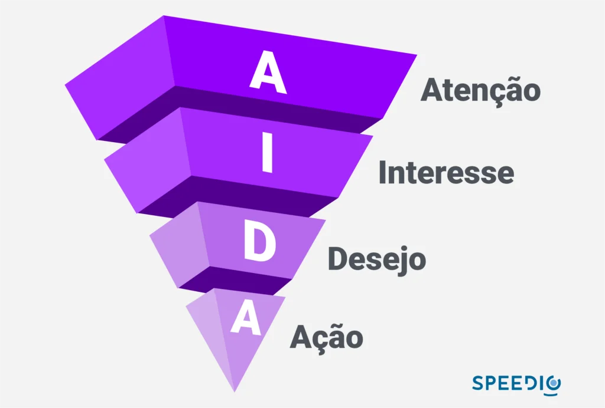
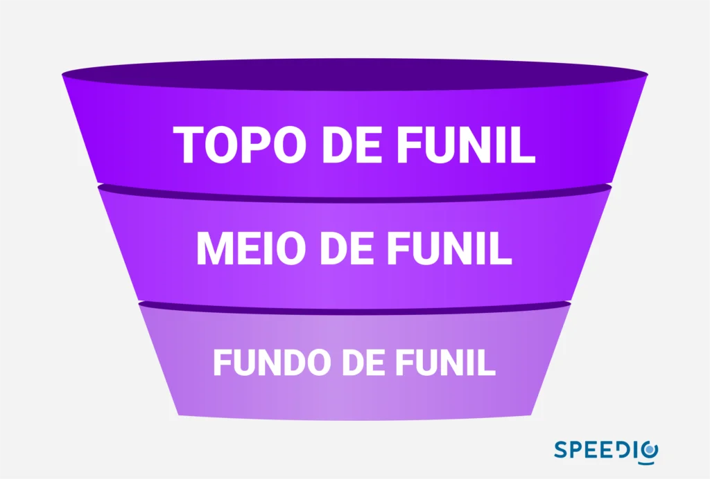

Artigos da Categoria
Método AIDA no B2B, entenda o funcionamento
Neste post você verá
Veja como o modelo AIDA no B2B (atenção, interesse, desejo e ação) pode ajudar a entender o comportamento do consumidor.
Qual o ciclo que o lead passa durante a jornada de compras antes de ser convertido em cliente? Existem poucas teorias que analisam o comportamento do consumidor. Afinal, o que desperta o interesse ou chama a atenção de determinado produto ou serviço?
Além disso, no marketing digital, por exemplo, o comportamento de um lead ao acessar uma landing page pode indicar o melhor local para incluir uma CTA.
AIDA: o que significa?
A metodologia AIDA veio para suprir essa necessidade do marketing como um todo. Ao entender como funciona o comportamento de um cliente em potencial em todas as etapas de sua jornada de compra, será possível traçar uma estratégia de marketing mais assertiva, que vai desde o primeiro contato com a empresa até a tomada de decisão da compra.
Quem é o criador da metodologia AIDA?
A metodologia de vendas foi criada no século XIX por Elmo Lewis, um dos pioneiros da publicidade americana. É possível alcançar a genialidade do processo quando vemos o quanto ele ainda é atual.
O objetivo inicial era otimizar o processo de vendas com um pensamento simples: chamar a atenção do cliente, dar-lhe informações sobre o produto e executar a venda. Uma forma bem robusta do que temos atualmente. Mas, assim como tudo no mundo do marketing, o AIDA no B2B também evoluiu.

O que significa a sigla AIDA?
Como falamos anteriormente, AIDA significa: atenção, interesse, desejo e ação. Vamos entender como cada uma dessas etapas se comporta durante o funil de vendas, ou melhor, em um funil AIDA?
Para começar, é primordial que você identifique as respostas para perguntas como: o que o lead pensa? o que ele deseja? o que falta para ele fechar negócio? Essas respostas serão seu guia na hora de realizar a técnica AIDA.

Primeira etapa: atenção
Nessa etapa você deve atrair a atenção do lead para que ele perceba sua oferta. Só temos um pequeno problema nisso tudo: ele é impactado por anúncios a todo momento e chamar a atenção passa a ser uma tarefa complexa.
Por exemplo, como chamar a atenção através de e-mail marketing? Um assunto interessante, um texto bem escrito e uma CTA bem pensada podem despertar a atenção de alguém para um produto ainda desconhecido.
Por mais que o mercado esteja carente por uma solução que só você oferece, seu produto ou serviço não irá se vender sozinho. Chame a atenção com criatividade, seja diferente. Cada etapa do AIDA possui um propósito, mas errar logo na primeira vai estragar toda sua estratégia.
Segunda etapa: interesse
Vimos que primeiro é importante chamar a atenção do lead, pois isso será um fator para o passo seguinte: despertar o interesse. Chamou a atenção com um título ou uma chamada interessante? Agora prenda a atenção e desperte o interesse.
Faça uso de palavras-chave que atraiam o consumidor até você. Empresas com negócios B2B buscam resultados, crescimento e muito mais. Você pode ter a solução de que ela procura, mas é preciso chamar a atenção e despertar o interesse.
Terceira etapa: desejo
Podemos ver que as etapas de atenção e interesse podem se passar por alguns segundos na cabeça do lead. Agora, evoluir o sentimento de interesse para desejo pode ser um pouco mais trabalhoso.
Ele tem que entender que aquele produto vai satisfazer suas necessidades, mas é preciso ir um pouco além. Tem que haver confiança naquilo que está sendo proposto. Por exemplo, seu texto pode estar indo super bem, mas na hora de prometer o que vai cumprir, você peca pelo excesso.
Como assim? Eu te explico: é muito melhor prometer algo que seja alcançável e que seu lead veja que pode conseguir, do que prometer algo surreal, que por mais que possa acontecer de fato, vá gerar desconfiança.
Por exemplo, é muito melhor que o seu discurso diga que as vendas da sua empresa vão melhorar do que prometer que sua empresa vai triplicar o número de vendas. Pode acontecer? Sim, mas é uma promessa que as pessoas olham com desconfiança.
Casos de sucesso para mostrar confiabilidade é uma ótima estratégia também. O que os seus clientes dizem de você? Eles aprovam seu produto?
Utilize vídeos de depoimentos como prova social. Tudo isso pode despertar o desejo dele, por esse motivo que esta etapa é a mais demorada.
Quarta etapa: ação
No último capítulo da nossa saga, quanto menos você fizer, melhor. Um pequeno empurrão pode ser determinante para que o lead tome a decisão de efetuar a compra. Ofereça uma demonstração gratuita ou mesmo um desconto. Em alguns casos, as empresas garantem até a devolução do dinheiro caso o consumidor não goste do produto.
Crie o senso de urgência sem apelar demais. Lembre-se, você só precisa que ele tome a ação, se ele chegou até aqui, a conversão é quase certa.
A importância do AIDA no funil de vendas
Se olharmos bem cada etapa do AIDA podemos olhar claramente um funil de vendas. O famoso pulo do gato, é saber utilizar as técnicas nos momentos chave para conseguir os melhores resultados.
No topo do funil temos a prospecção, no meio o entendimento das necessidades e no final o fechamento da venda. Ter metodologia aplicada durante esse processo vai facilitar muito a sua vida e a eficiência do seu funil. Por sinal, uma pesquisa da Hubspot aponta que essa é a principal preocupação de metade das empresas entrevistadas.
Ainda na mesma pesquisa, 69% das empresas encontram dificuldades na hora da conversão. Os números também não são bons na hora de prospectar leads, já que 40% das empresas encontram dificuldades até para prospectar.

Como utilizar a metodologia AIDA?
Assim como em toda estratégia de vendas, conhecer seu público é o segredo (não tão secreto assim) de ter um alto índice de sucesso. Não adianta tentar vender para quem não tem interesse em seu produto. Para que a primeira etapa do AIDA funcione e você consiga chamar a atenção de forma positiva, o lead precisa estar de acordo com seu perfil de cliente ideal.
Mas é apenas isso, para ter bons argumentos você também precisa conhecer muito bem o produto que está vendendo. Pode ter certeza, se o prospect faz parte do seu ICP, ele vai estar de olho em todas as empresas do mercado, então é quase certo que ele possui informações do seu concorrente.
Conheça bem o seu produto e conheça bem a concorrência. Nesse momento você põe em jogo as suas principais qualidades frente ao mercado e ganha argumentos convincentes para ganhar o lead.
Outro fator para pôr em prática é a criação de conteúdo relevante de acordo com a etapa do funil de vendas. Crie conteúdos para cada estágio. No topo, por exemplo, um artigo introdutório sobre o tema, para que o lead possa ser introduzido no tema e reconheça suas próprias dores.
Estar presente em diferentes canais para se comunicar é algo que vai fazer uma grande diferença. esteja no email marketing, mas também nas redes sociais e plataformas. Ter uma comunicação versátil é tudo.
A Protocolo Hidra pode te ajudar na etapa mais importante do AIDA
Falamos algumas vezes durante o texto sobre a importância de ter um lead qualificado na hora de prospectar clientes B2B e de como o AIDA só irá funcionar se o lead estiver dentro do seu ICP.
Pois bem, a Protocolo Hidra pode te ajudar com esse problema de encontrar leads que servem para sua prospecção ativa. Somos a melhor plataforma de geração de leads B2B do Brasil, eleita pela B2B Stack.

Os dados fornecidos pela Protocolo Hidra possuem um alto índice de assertividade. Para executar a metodologia AIDA com precisão, basta utilizar nossa plataforma B2B com os mais de 80 filtros para desenhar o seu ICP e em poucos segundos você terá sua listagem de leads. TESTE AQUI!
E por que afirmo com tanta certeza que nossos dados são os melhores? Simples, além de conseguir essa listagem, a nossa plataforma de big data consegue realizar a validação desses dados, dando ainda mais certeza que eles estão corretos e atualizados.
Além disso, a Protocolo Hidra está 100% de acordo com a LGPD, logo, posso dizer com toda certeza e tranquilidade do mundo que sim, temos os melhores dados do Brasil.
A metodologia AIDA é muito importante para que sua empresa consiga alcançar ótimos resultados com as vendas, mas, como você pode ver, é fundamental ter as ferramentas certas ou sua estratégia não dará certo.
Quer conhecer outras metodologias de vendas?